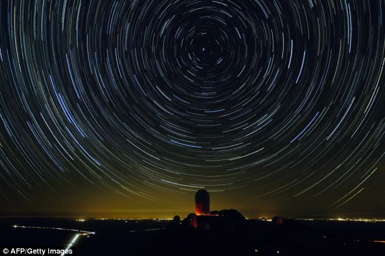
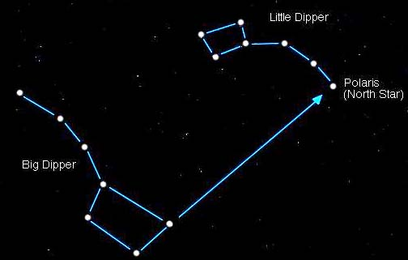

As the earth spins, the north star pretty much stays in place. Due to
procession
however (the world being tilted on its axis), it north won't
always point to Polaris.
In a few thousand years it will probably point
to a star in Draco. But for now, we are
grateful to have the north star
to light and guide the way.
On clear nights at least.
As the world turns:
If you didn't know, here's how you find it:
